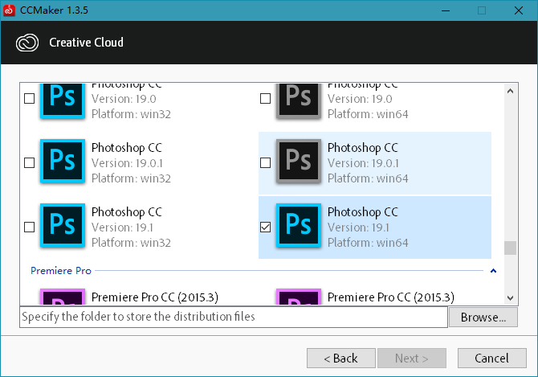
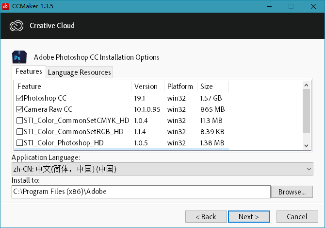
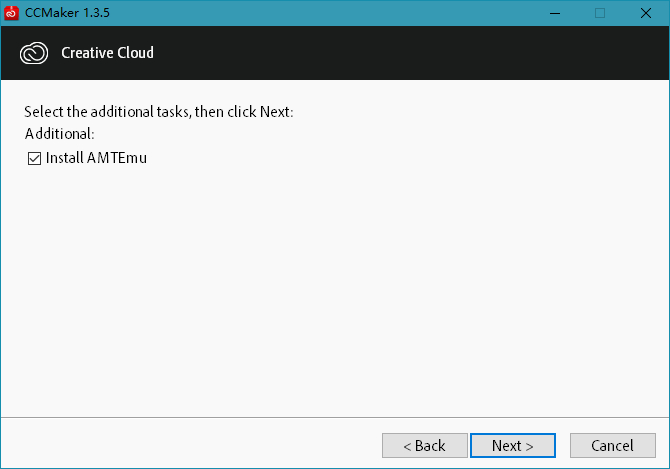

Adobe软件下载激活神器CCMaker
CCMaker是俄罗斯人El Sanchez开发的一款集Adobe软件全家桶下载、安装、激活一条龙服务的小工具。该工具小巧强大效率高，主要作用在于绕过登录直接在线下载Adobe Creative Cloud创意云里的产品，可选安装附加组件和多国语言，可选安装Adobe产品破解工具AMTEmu模拟器。Adobe CC套件最新版下载及升级需要登录Adobe ID，如果你不愿意注册Adobe ID，那么CCMaker无疑就是下载Adobe产品最好的工具。
  CCMaker工具拥有以下特点：
1、下载并安装具有新类型分发的产品（Adobe CC系列产品）。
2、在CCMaker工具内选择下载的产品，还可选其它可用组件和多国语言资源。
3、如果产品有其它组件，您就可以从所有可用的组件中可选下载最新版的组件。
4、如果产品具有下载/安装的多国语言资源将仅提供给实际可以用于下载的文件。
5、具有相同系列版本的几种可以下载的产品可以组合安装成一个Adobe大师版。
6、下载的产品包只包含一个文件夹与必要的文件，并与原始安装程序Set-up.exe兼容。
7、下载的产品的安装文件是基于json文件的处理，其中包含有关组件和pimx文件的信息，其中包含安装文件的说明，Windows注册表中的条目，创建快捷方式和启动程序。
8、集成Adobe 系列软件模拟授权注册破解工具，即外国人Painter开发的AMTEmu模拟器，可选安装其破解补丁，同时原始文件amtlib.dll具有扩展名.dontdelete，请勿将其不必要地删除。
注1：此程序依赖微软VC++ 2015/2017运行库才可以正常运行，Win10自带无需安装；
注2：此工具可以安装的版本仅限Adobe 2015~2018系列原版软件，不显示更早的版本；
新版变化
http://forum.ru-board.com/topic.cgi?forum=35&topic=80561&start=307&limit=1
http://forum.ru-board.com/topic.cgi?forum=35&topic=80561&start=300#9
2018-01-28 v1.3.5
Fixed: incorrect processing application.json files on the system of language with double-byte character sets (DBCS).
Fixed: incorrect display of status with partial downloading.
Last Updated: more correct exception handling.
Updated: uninstaller moved to the folder% CommonProgramFiles% \ Adobe \ Installers.
Updated: running without parameters uninstaller operates in the removal of several products at a time.
下载地址
CCMaker1.3.5.7z